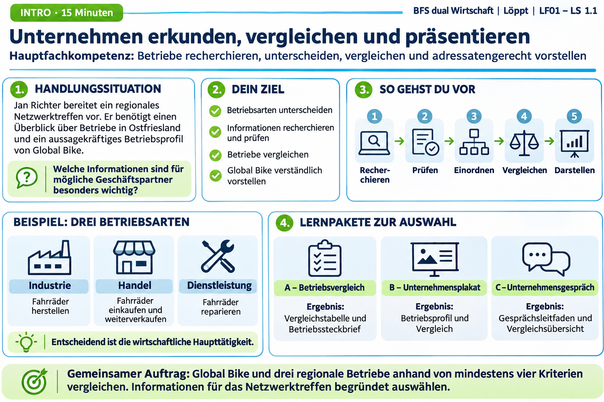

Zur Materialübersicht
BFS dual · Lernfeld 1 · LS 1.1
Übersicht zum Fall

Der Advance Organizer zeigt das Fallbeispiel und die drei Wahlprodukte. Für den Ablauf und die letzten beiden Phasen gilt die Aufgabenübersicht in diesem Lernpaket.
Material als bearbeitbare Markdown-Datei
Zur Materialübersicht